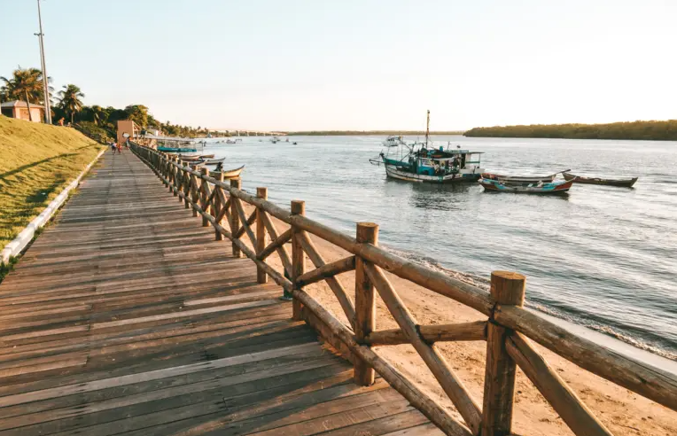

Lugares indispensáveis para visitar e conhecer em Aracaju-SE:
Orla de Atalaia
Inicie o seu dia com um descontraído passeio pelo famoso calçadão à beira-mar de Aracaju.
Aproveite a oportunidade para dar um mergulho nas águas agradavelmente temperadas que banham a cidade e desfrutar de um revigorante coco gelado.
Este calçadão é amplamente reconhecido como um dos mais belos do país e oferece excelentes instalações para a prática de atividades esportivas ao ar livre.
Orla Pôr do Sol
A Orla Pôr do Sol é um dos pontos turísticos mais deslumbrantes de Aracaju, Sergipe, e é um local perfeito para quem deseja vivenciar a beleza natural e a atmosfera relaxante da cidade. Este lugar pitoresco é especialmente popular entre os moradores locais e turistas que desejam desfrutar de vistas espetaculares do pôr do sol sobre o Rio Sergipe. O local também é conhecido por ser cenário de eventos culturais e apresentações ao ar livre, como música ao vivo e apresentações de dança, especialmente durante os fins de semana. Isso cria uma atmosfera animada e vibrante que atrai tanto moradores quanto visitantes.
Passarela do Caranguejo
A Passarela do Caranguejo é uma verdadeira representação da cultura e da culinária sergipana, é uma atração imperdível para os amantes da gastronomia, vida noturna e cultura local. Localizada na praia de Atalaia, esta área é famosa por seus restaurantes, bares e entretenimento ao vivo, criando uma atmosfera vibrante e divertida. A principal atração da Passarela do Caranguejo é, como o nome sugere, a oportunidade de saborear deliciosos pratos de caranguejo e frutos do mar frescos em uma variedade de restaurantes que margeiam a avenida oferecendo uma experiência turística autêntica para quem visita Aracaju.
Projeto Tamar (Oceanário de Aracaju)
O Projeto Tamar de Aracaju, também conhecido como Oceanário de Aracaju, é uma atração turística imperdível para os amantes da natureza e da vida marinha. Localizado na deslumbrante Orla de Atalaia, este projeto tem como objetivo principal a conservação e proteção das tartarugas marinhas, que são animais incríveis e ameaçados de extinção, além de outros animais. Os visitantes têm a oportunidade de aprender sobre a vida dessas majestosas criaturas marinhas, desde a observação de suas diferentes espécies até a compreensão dos esforços de conservação em andamento. O destaque indiscutível do local é a tartaruga gigante que saúda os visitantes na entrada, uma experiência que certamente encanta crianças e adultos. O Oceanário oferece exposições educativas, palestras informativas e atividades interativas que permitem aos visitantes se conectar de forma mais profunda com o mundo marinho. Portanto, ao visitar Aracaju, não deixe de incluir o Projeto Tamar em seu itinerário.
Ilha dos Namorados
A Ilha dos Namorados é um lugar encantador e romântico localizado em Aracaju, que atrai casais em busca de um refúgio tranquilo e pitoresco. Esta ilha, também conhecida como "Ilha da Sogra", é um destino turístico popular para aqueles que desejam desfrutar de momentos especiais em meio à natureza exuberante e paisagens deslumbrantes. A ilha é cercada pelo Rio Sergipe e é acessada por pequenas embarcações, o que já proporciona uma experiência única. A principal atração da Ilha dos Namorados é a sua praia isolada e tranquila, que oferece areias brancas e águas calmas e cristalinas, além disso, também oferece atividades como passeios de caiaque, stand-up paddle e trilhas pela natureza, permitindo que os casais explorem ainda mais a beleza natural da ilha.
Crôa do Goré
A Crôa do Goré é um destino turístico verdadeiramente único e encantador. É um pequeno banco de areia localizado no Rio Vaza-Barris, que só fica visível durante a maré baixa, criando uma ilha temporária que atrai visitantes em busca de um dia de lazer e relaxamento em um ambiente natural deslumbrante. A principal atração da Crôa do Goré é a sua paisagem deslumbrante e isolada. Quando a maré baixa, essa ilhota emerge das águas e se transforma em um paraíso de areias brancas cercado por águas tranquilas e cristalinas. Os visitantes podem aproveitar esse cenário pitoresco para nadar, fazer piqueniques na praia, praticar esportes aquáticos como stand-up paddle ou caiaque, ou simplesmente relaxar sob o sol tropical. Além da beleza natural, a Crôa oferece uma experiência tranquila e relaxante, longe do barulho da cidade. É um local perfeito para escapar do ritmo acelerado da vida cotidiana e se reconectar com a natureza.
Largo da Gente Sergipana
O Largo da Gente Sergipana é uma atração turística imperdível. Este encantador espaço cultural celebra a rica história e cultura do estado de Sergipe de uma maneira única e interativa, proporcionando uma experiência enriquecedora para visitantes de todas as idades. Localizado no coração da cidade, o Largo da Gente Sergipana é um verdadeiro tesouro que oferece uma imersão na cultura local. Uma das características mais marcantes deste local é a sua arquitetura moderna e arrojada, que contrasta com o cenário histórico da cidade. É o local perfeito para se conectar com a cultura e a história de Sergipe, além de apreciar o ambiente vibrante e as delícias culinárias da região. Certamente, é um lugar que não deve faltar em seu roteiro de viagem a Aracaju.
Museu da Gente Sergipana
O Museu da Gente Sergipana é uma atração cultural e educativa extraordinária que oferece aos visitantes uma imersão profunda na rica história, cultura e identidade do povo sergipano. Este museu é um local interativo e inovador que combina arte, tecnologia e tradição para contar a história fascinante desse estado do nordeste brasileiro. Uma das características mais notáveis do museu é a ênfase em destacar as contribuições de figuras importantes da cultura sergipana, como músicos, artistas, escritores e líderes culturais. Os visitantes podem aprender sobre os ícones culturais locais que moldaram a identidade de Sergipe ao longo dos anos. Além disso, o Museu da Gente Sergipana promove exposições rotativas que abordam diversos aspectos da cultura sergipana, desde a música e a dança até a culinária e as tradições religiosas. O museu também possui uma loja de souvenirs onde os visitantes podem adquirir lembranças locais e produtos artesanais.

Palácio Museu Olímpio Campos
O Palácio Museu Olímpio Campos é uma joia histórica e cultural que oferece aos visitantes a oportunidade de mergulhar na rica história do estado e explorar a beleza arquitetônica de um antigo palácio governamental. Este museu é um local fascinante que combina patrimônio histórico com exposições informativas, tornando-se uma atração turística imperdível na cidade. O edifício que abriga o museu é uma atração em si. O Palácio Olímpio Campos é uma construção neoclássica que data do século XIX, com uma fachada imponente e detalhes arquitetônicos impressionantes. O museu está localizado no centro da cidade, o que o torna de fácil acesso para os turistas que desejam explorar o centro histórico de Aracaju. Uma das principais atrações do museu é a exposição permanente que homenageia o ex-governador Olímpio Campos, uma figura importante na história política de Sergipe. Os visitantes podem aprender sobre sua vida e legado através de exposições interativas.
Mercado Municipal (Mercadão)
O Mercado Municipal de Aracaju, também conhecido como "Mercadão", é uma atração turística icônica e vibrante na capital de Sergipe, oferecendo aos visitantes uma experiência autêntica de gastronomia, cultura e comércio local. Este mercado é uma parada imperdível para quem deseja explorar a riqueza da culinária e da cultura sergipana. Localizado no centro da cidade, o Mercado Municipal é um edifício histórico de arquitetura colonial que remonta ao século XIX, e por si só é uma atração encantadora para os amantes da arquitetura e da história. Ao entrar no mercado, os visitantes são recebidos por uma atmosfera movimentada e animada, onde os corredores estão repletos de barracas e bancas que vendem uma variedade de produtos locais. A principal atração do mercado é a sua oferta de alimentos frescos e produtos regionais. Você encontrará uma variedade de frutas tropicais, legumes, peixes, frutos do mar e iguarias típicas de Sergipe, como a famosa carne de sol. É o lugar perfeito para experimentar a autêntica culinária sergipana.